Mechanical Design • AutoCAD • SOLIDWORKS • Biomedical Research
Mechanical design and development of an adjustable platform for controlled and repeatable positioning of LED light sources above multi-well cell-culture plates for photobiomodulation experiments.
Completed 2D layout, orthographic and sectional views, major dimensions, adjustment features, LED positioning, and mechanical connection details.
Three-dimensional parts and assembly developed from the completed AutoCAD design to evaluate component geometry, fit, clearances, adjustment mechanisms, and overall assembly relationships.
Prototype fabrication, physical assembly evaluation, positioning verification, and experimental testing under laboratory exposure conditions.
This project involves the design and development of an adjustable mechanical platform for positioning multiple LED light sources above a multi-well cell-culture plate. The system is intended to provide controlled, repeatable, and mechanically stable illumination for photobiomodulation experiments involving endothelial cells.
The design was first developed as a detailed 2D AutoCAD layout defining the base, support structure, adjustable LED carrier, LED-retaining geometry, sample-platform location, and vertical adjustment mechanism. The design was then translated into SOLIDWORKS to develop three-dimensional components and the complete mechanical assembly for fit, clearance, and manufacturability evaluation.
Allow the LED carrier to move vertically so the source-to-sample distance can be adjusted and reproduced between experiments.
Position multiple LED sources directly above selected wells while maintaining consistent mechanical alignment across the plate.
Provide a defined platform for the multi-well plate so its location remains consistent relative to the illumination system.
The first design phase was completed in AutoCAD. The layout establishes the overall geometry of the system and defines the relationship between the base, vertical supports, adjustable carrier, LED locations, and multi-well plate.
Orthographic and sectional views were developed to define component dimensions, support geometry, adjustment features, LED locations, and mechanical interfaces before transitioning the design into SOLIDWORKS for three-dimensional modeling and assembly development.
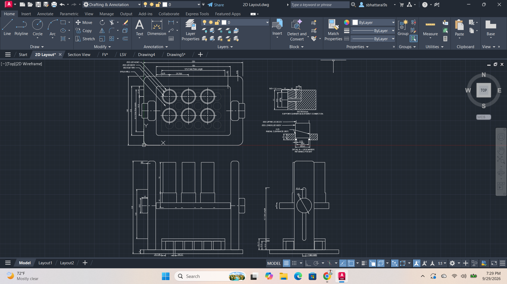
Complete working layout showing the top, front, side, sectional, and detailed views used to establish the geometry before 3D modeling.
Detailed AutoCAD views used to define the major components, adjustment system, LED positioning, and mechanical interfaces.
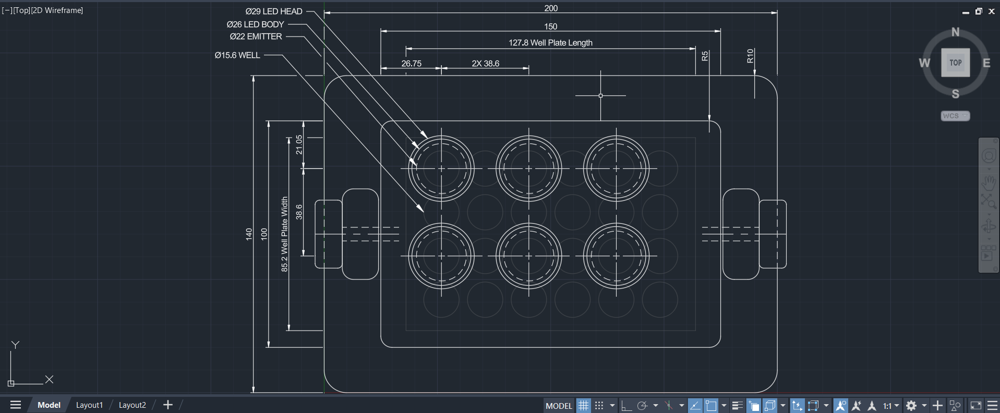
Top-view layout showing six LED positions aligned above selected wells of the multi-well plate, along with the carrier and support geometry.
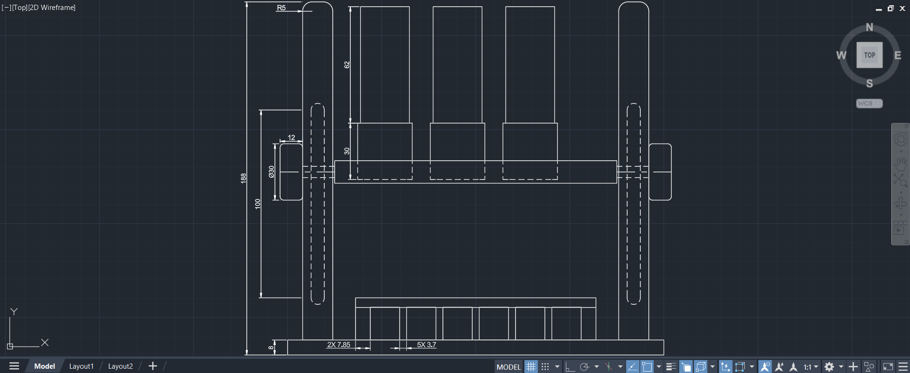
Front elevation showing the support structure, LED carrier, sample platform, and overall vertical arrangement of the system.
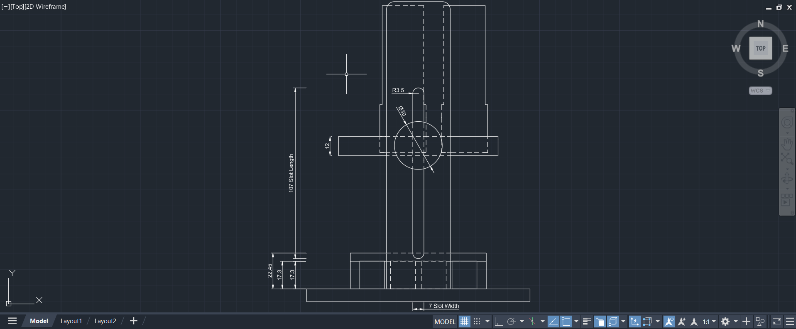
Side elevation showing the elongated adjustment slot used to reposition the LED carrier vertically and control source-to-sample distance.
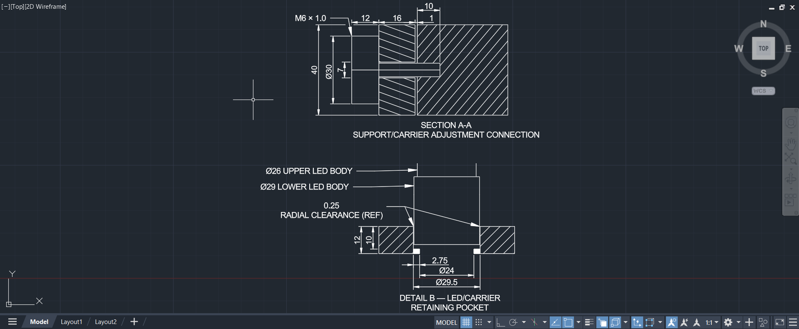
Sectioned details defining the support-to-carrier adjustment connection and the retaining geometry used to locate the LED bodies within the carrier.
Select any drawing to view the full-resolution version.
Following completion of the 2D AutoCAD layout, the design was translated into SOLIDWORKS to create individual three-dimensional components and evaluate the complete mechanical assembly.
The SOLIDWORKS models were used to evaluate component geometry, fit, clearances, LED-holder positioning, vertical adjustment features, and relationships between the supporting structure, LED carrier, and sample platform.
Assembly modeling also provided an opportunity to identify potential interference and manufacturability concerns before moving toward physical fabrication and experimental testing.
Three-dimensional components and assembly views developed from the completed AutoCAD design to evaluate geometry, mechanical relationships, adjustment features, fit, and overall system configuration.
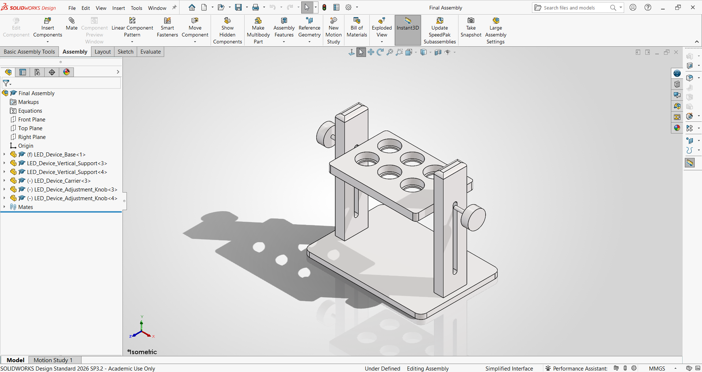
Isometric view of the complete mechanical assembly showing the base, vertical supports, adjustable LED carrier, adjustment knobs, and supporting structure.
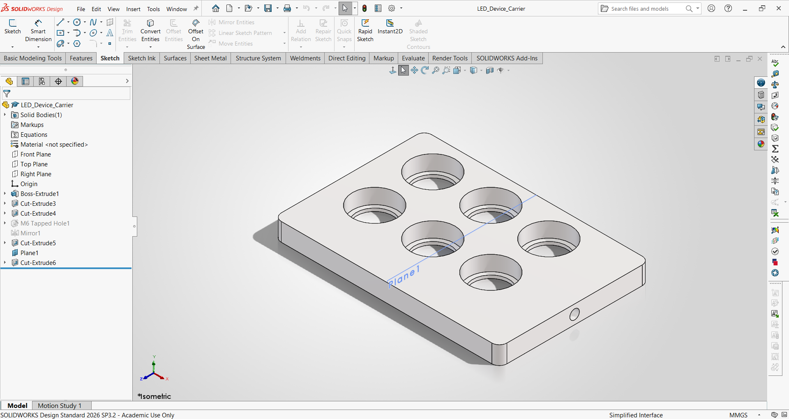
Three-dimensional carrier containing six LED mounting locations positioned to align light sources above selected wells of the culture plate.
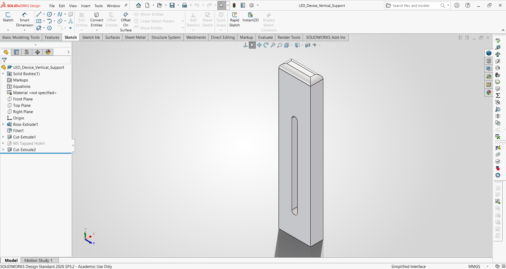
Support component featuring the elongated adjustment slot used to control the vertical position of the LED carrier.
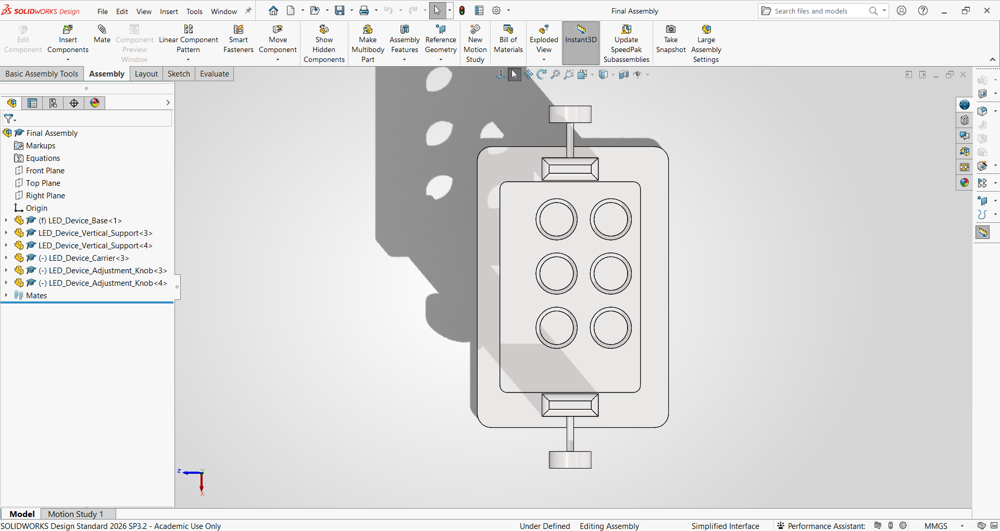
Top view showing the six LED positions, carrier geometry, support locations, and overall alignment of the assembly.
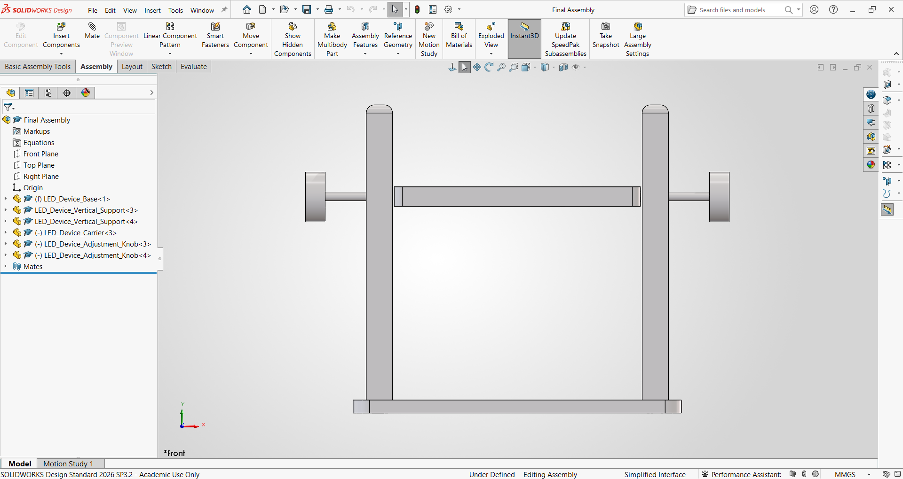
Front view illustrating the relationship between the base, vertical supports, adjustable carrier, and locking hardware.
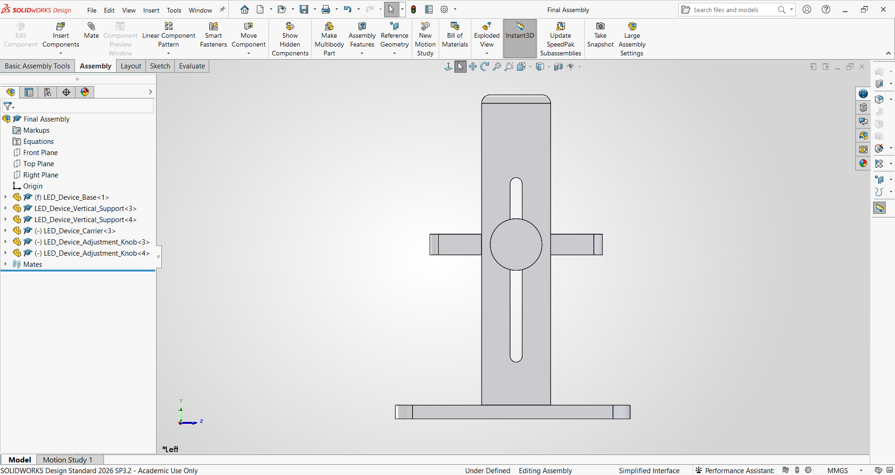
Side view highlighting the vertical adjustment slot and knob mechanism used to reposition and secure the LED carrier.
Select any model to view the full-resolution version.
Translate the completed CAD design into physical components and assemble the first functional prototype of the exposure platform.
Evaluate component fit, adjustment travel, alignment, structural stability, and ease of repositioning after fabrication.
Evaluate positioning repeatability and suitability for controlled LED illumination during laboratory photobiomodulation experiments.